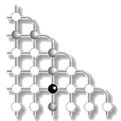

 Two New Quorum Based Algorithms for Distributed Mutual Exclusion
and ,
in Proceedings of the 17th International Conference on Distributed Computing Systems (ICDCS '97), Baltimore, USA, May 1997, pp.100-106.Abstract
- Two novel suboptimal algorithms for mutual exclusion in distributed systems are presented. One is based on the modification of Maekawa's grid based quorum scheme. The size of quorums is approximately sqrt(2)sqrt(N) where N is the number of sites in a network, as compared to 2 sqrt(N) of the original method. The method is simple and geometrically evident. The second one is based on the idea of difference sets in combinatorial theory. The resulting scheme is very close to optimal in terms of quorum size.
Download Paper
- Acrobat: icdcs97.pdf (185 KB)